import pandas as pd
import numpy as np
import matplotlib.pyplot as plt
import matplotlib as mpl
import seaborn as sns #Samuel Norman Seaborn
from sklearn.preprocessing import scale
from sklearn.discriminant_analysis import QuadraticDiscriminantAnalysis
from sklearn.decomposition import PCA
%matplotlib inline
plt.style.use('seaborn-white')
sns.set_context("notebook", font_scale=1.5, rc={"lines.linewidth": 2.5})1 Introduction
|
|

|
1.1 Pandas
Python is a general-purpose language with statistics modules. When it comes to building complex analysis pipelines that mix statistics with e.g. image analysis, text mining, or control of a physical experiment, the richness of Python is an invaluable asset
1.1.1 Constructing data
One way to think a Series is regarded it as a labeled array. Creating a Series by passing a list of values, letting pandas create a default integer index:
Since we did not specify an index for the data, a default one consisting of the integers 0 through N - 1 (where N is the length of the data) is created. Often you’ll want to create a Series with an index identifying each data point with a label:
Another way to think about a Series is as a fixed-length, ordered dictionary, as it is a mapping of index values to data values.
Ohio 35000
Texas 71000
Oregon 16000
Utah 5000
dtype: int64We will store and manipulate this data in a pandas.DataFrame, from the pandas module. It is the Python equivalent of the spreadsheet table. It is different from a 2D numpy array as it has named columns, can contain a mixture of different data types by column, and has elaborate mechanisms. The DataFrame has both a row and column index.
dates = pd.date_range("20220101", periods=6)
df = pd.DataFrame(np.random.randn(6, 4), index=dates, columns=list("ABCD"))
df| A | B | C | D | |
|---|---|---|---|---|
| 2022-01-01 | 0.166868 | 2.444831 | 0.291433 | 1.426635 |
| 2022-01-02 | 1.002246 | -0.027256 | -0.383451 | 0.266056 |
| 2022-01-03 | -0.544344 | -1.092930 | 0.156811 | -0.065610 |
| 2022-01-04 | -0.042673 | 0.090997 | -0.278790 | 1.249868 |
| 2022-01-05 | 0.940585 | 1.306884 | 1.229377 | 0.318209 |
| 2022-01-06 | 0.097427 | 1.118011 | 0.359106 | 0.616620 |
Creating from arrays: A pandas.DataFrame can also be seen as a dictionary of 1D Series that share the same index, eg arrays or lists. If we have 3 numpy arrays:
t = np.arange(10) #start from 0
sin_t = np.sin(t)
cos_t = np.cos(t)
df2 = pd.DataFrame({'t': t, 'sin': sin_t, 'cos': cos_t})
df2| t | sin | cos | |
|---|---|---|---|
| 0 | 0 | 0.000000 | 1.000000 |
| 1 | 1 | 0.841471 | 0.540302 |
| 2 | 2 | 0.909297 | -0.416147 |
| 3 | 3 | 0.141120 | -0.989992 |
| 4 | 4 | -0.756802 | -0.653644 |
| 5 | 5 | -0.958924 | 0.283662 |
| 6 | 6 | -0.279415 | 0.960170 |
| 7 | 7 | 0.656987 | 0.753902 |
| 8 | 8 | 0.989358 | -0.145500 |
| 9 | 9 | 0.412118 | -0.911130 |
One of the most common is from a dictionary of equal-length lists or NumPy arrays:
data = {"state": ["Ohio", "Ohio", "Ohio", "Nevada", "Nevada", "Nevada"],
"year": [2000, 2001, 2002, 2001, 2002, 2003],
"pop": [1.5, 1.7, 3.6, 2.4, 2.9, 3.2]}
frame = pd.DataFrame(data)
frame| state | year | pop | |
|---|---|---|---|
| 0 | Ohio | 2000 | 1.5 |
| 1 | Ohio | 2001 | 1.7 |
| 2 | Ohio | 2002 | 3.6 |
| 3 | Nevada | 2001 | 2.4 |
| 4 | Nevada | 2002 | 2.9 |
| 5 | Nevada | 2003 | 3.2 |
The columns of the resulting DataFrame may have different dtypes.
1.1.2 Viewing data
(<PandasArray>
[1.0, 3.0, 5.0, nan, 6.0, 8.0]
Length: 6, dtype: float64, RangeIndex(start=0, stop=6, step=1))| A | B | C | D | |
|---|---|---|---|---|
| 2022-01-01 | 0.166868 | 2.444831 | 0.291433 | 1.426635 |
| 2022-01-02 | 1.002246 | -0.027256 | -0.383451 | 0.266056 |
| 2022-01-03 | -0.544344 | -1.092930 | 0.156811 | -0.065610 |
| 2022-01-04 | -0.042673 | 0.090997 | -0.278790 | 1.249868 |
| 2022-01-05 | 0.940585 | 1.306884 | 1.229377 | 0.318209 |
| A | B | C | D | |
|---|---|---|---|---|
| 2022-01-04 | -0.042673 | 0.090997 | -0.278790 | 1.249868 |
| 2022-01-05 | 0.940585 | 1.306884 | 1.229377 | 0.318209 |
| 2022-01-06 | 0.097427 | 1.118011 | 0.359106 | 0.616620 |
DatetimeIndex(['2022-01-01', '2022-01-02', '2022-01-03', '2022-01-04',
'2022-01-05', '2022-01-06'],
dtype='datetime64[ns]', freq='D')array([[ 0.16686843, 2.44483123, 0.29143297, 1.42663542],
[ 1.00224626, -0.02725596, -0.3834514 , 0.26605642],
[-0.54434398, -1.0929295 , 0.15681066, -0.06560956],
[-0.04267318, 0.09099718, -0.27878987, 1.24986756],
[ 0.9405845 , 1.30688362, 1.22937671, 0.31820881],
[ 0.09742713, 1.11801138, 0.35910632, 0.6166202 ]])describe() shows a quick statistic summary of your data:
| A | B | C | D | |
|---|---|---|---|---|
| count | 6.000000 | 6.000000 | 6.000000 | 6.000000 |
| mean | 0.270018 | 0.640090 | 0.229081 | 0.635296 |
| std | 0.597864 | 1.239381 | 0.576149 | 0.588628 |
| min | -0.544344 | -1.092930 | -0.383451 | -0.065610 |
| 25% | -0.007648 | 0.002307 | -0.169890 | 0.279095 |
| 50% | 0.132148 | 0.604504 | 0.224122 | 0.467415 |
| 75% | 0.747155 | 1.259666 | 0.342188 | 1.091556 |
| max | 1.002246 | 2.444831 | 1.229377 | 1.426635 |
Sorting by an axis:
| D | C | B | A | |
|---|---|---|---|---|
| 2022-01-01 | 1.426635 | 0.291433 | 2.444831 | 0.166868 |
| 2022-01-02 | 0.266056 | -0.383451 | -0.027256 | 1.002246 |
| 2022-01-03 | -0.065610 | 0.156811 | -1.092930 | -0.544344 |
| 2022-01-04 | 1.249868 | -0.278790 | 0.090997 | -0.042673 |
| 2022-01-05 | 0.318209 | 1.229377 | 1.306884 | 0.940585 |
| 2022-01-06 | 0.616620 | 0.359106 | 1.118011 | 0.097427 |
Sorting by values:
| A | B | C | D | |
|---|---|---|---|---|
| 2022-01-03 | -0.544344 | -1.092930 | 0.156811 | -0.065610 |
| 2022-01-02 | 1.002246 | -0.027256 | -0.383451 | 0.266056 |
| 2022-01-04 | -0.042673 | 0.090997 | -0.278790 | 1.249868 |
| 2022-01-06 | 0.097427 | 1.118011 | 0.359106 | 0.616620 |
| 2022-01-05 | 0.940585 | 1.306884 | 1.229377 | 0.318209 |
| 2022-01-01 | 0.166868 | 2.444831 | 0.291433 | 1.426635 |
1.1.3 Selecting data
Selecting a single column, which yields a Series, equivalent to df.A:
2022-01-01 0.166868
2022-01-02 1.002246
2022-01-03 -0.544344
2022-01-04 -0.042673
2022-01-05 0.940585
2022-01-06 0.097427
Freq: D, Name: A, dtype: float64| A | B | C | D | |
|---|---|---|---|---|
| 2022-01-01 | 0.166868 | 2.444831 | 0.291433 | 1.426635 |
| 2022-01-02 | 1.002246 | -0.027256 | -0.383451 | 0.266056 |
| 2022-01-03 | -0.544344 | -1.092930 | 0.156811 | -0.065610 |
Selection by labels of columns or rows (loc)
| A | B | |
|---|---|---|
| 2022-01-01 | 0.166868 | 2.444831 |
| 2022-01-02 | 1.002246 | -0.027256 |
| 2022-01-03 | -0.544344 | -1.092930 |
| 2022-01-04 | -0.042673 | 0.090997 |
| 2022-01-05 | 0.940585 | 1.306884 |
| 2022-01-06 | 0.097427 | 1.118011 |
| A | B | C | |
|---|---|---|---|
| 2022-01-01 | 0.166868 | 2.444831 | 0.291433 |
| 2022-01-02 | 1.002246 | -0.027256 | -0.383451 |
| 2022-01-03 | -0.544344 | -1.092930 | 0.156811 |
| 2022-01-04 | -0.042673 | 0.090997 | -0.278790 |
Selection by position (Simiar to NumPy and Python)
Boolean indexing
| A | B | C | D | |
|---|---|---|---|---|
| 2022-01-01 | 0.166868 | 2.444831 | 0.291433 | 1.426635 |
| 2022-01-02 | 1.002246 | -0.027256 | -0.383451 | 0.266056 |
| 2022-01-05 | 0.940585 | 1.306884 | 1.229377 | 0.318209 |
| 2022-01-06 | 0.097427 | 1.118011 | 0.359106 | 0.616620 |
Setting and adding data
| A | B | C | D | E | |
|---|---|---|---|---|---|
| 2022-01-01 | 0.166868 | 2.444831 | 0.291433 | 1.426635 | one |
| 2022-01-02 | 1.002246 | -0.027256 | -0.383451 | 0.266056 | one |
| 2022-01-03 | -0.544344 | -1.092930 | 0.156811 | -0.065610 | two |
| 2022-01-04 | -0.042673 | 0.090997 | -0.278790 | 1.249868 | three |
| 2022-01-05 | 0.940585 | 1.306884 | 1.229377 | 0.318209 | four |
| 2022-01-06 | 0.097427 | 1.118011 | 0.359106 | 0.616620 | three |
An important method on pandas objects is reindex, which means to create a new object with the values rearranged to align with the new index.
d 4.5
b 7.2
a -5.3
c 3.6
dtype: float64obj2 = obj.reindex(["a", "b", "c", "d", "e"]) # Reindexing allows you to change/add/delete the index on a specified axis. This returns a copy of the data.
obj2 #pandas primarily uses the value np.nan to represent missing data. It is by default not included in computations. Check dropna(), fillna() and isna()a -5.3
b 7.2
c 3.6
d 4.5
e NaN
dtype: float641.1.4 Computation about data
| A | B | C | D | |
|---|---|---|---|---|
| 2022-01-01 | 0.166868 | 2.444831 | 0.291433 | 1.426635 |
| 2022-01-02 | 1.169115 | 2.417575 | -0.092018 | 1.692692 |
| 2022-01-03 | 0.624771 | 1.324646 | 0.064792 | 1.627082 |
| 2022-01-04 | 0.582098 | 1.415643 | -0.213998 | 2.876950 |
| 2022-01-05 | 1.522682 | 2.722527 | 1.015379 | 3.195159 |
| 2022-01-06 | 1.620109 | 3.840538 | 1.374485 | 3.811779 |
1.1.5 Merge and Group data
([ A B C D
2022-01-01 0.166868 2.444831 0.291433 1.426635
2022-01-02 1.002246 -0.027256 -0.383451 0.266056,
A B C D
2022-01-03 -0.544344 -1.092930 0.156811 -0.065610
2022-01-04 -0.042673 0.090997 -0.278790 1.249868,
A B C D
2022-01-05 0.940585 1.306884 1.229377 0.318209
2022-01-06 0.097427 1.118011 0.359106 0.616620],
pandas.core.frame.DataFrame)pd.concat(pieces) #Adding a column to a DataFrame is relatively fast. However, adding a row requires a copy, and may be expensive.| A | B | C | D | |
|---|---|---|---|---|
| 2022-01-01 | 0.166868 | 2.444831 | 0.291433 | 1.426635 |
| 2022-01-02 | 1.002246 | -0.027256 | -0.383451 | 0.266056 |
| 2022-01-03 | -0.544344 | -1.092930 | 0.156811 | -0.065610 |
| 2022-01-04 | -0.042673 | 0.090997 | -0.278790 | 1.249868 |
| 2022-01-05 | 0.940585 | 1.306884 | 1.229377 | 0.318209 |
| 2022-01-06 | 0.097427 | 1.118011 | 0.359106 | 0.616620 |
df = pd.DataFrame(
{
"A": ["foo", "bar", "foo", "bar", "foo", "bar", "foo", "foo"],
"B": ["one", "one", "two", "three", "two", "two", "one", "three"],
"C": np.random.randn(8),
"D": np.random.randn(8),
}
)
df| A | B | C | D | |
|---|---|---|---|---|
| 0 | foo | one | -2.072404 | 0.308518 |
| 1 | bar | one | -0.786539 | 0.875751 |
| 2 | foo | two | 0.544077 | 1.649226 |
| 3 | bar | three | -0.276529 | -0.998452 |
| 4 | foo | two | -1.575059 | 0.129585 |
| 5 | bar | two | 1.484244 | 0.783970 |
| 6 | foo | one | 0.266894 | 1.922994 |
| 7 | foo | three | -1.590179 | 0.378632 |
1.1.6 I/O
For more information, refer to https://wesmckinney.com/book/pandas-basics.html and https://pandas.pydata.org/Pandas_Cheat_Sheet.pdf
1.2 Seaborn
Statistical analysis is a process of understanding how variables in a dataset relate to each other and how those relationships depend on other variables. Visualization can be a core component of this process because, when data are visualized properly, the human visual system can see trends and patterns that indicate a relationship.
The “tips” dataset https://www.kaggle.com/ranjeetjain3/seaborn-tips-dataset
(244, 7)| total_bill | tip | sex | smoker | day | time | size | |
|---|---|---|---|---|---|---|---|
| 0 | 16.99 | 1.01 | Female | No | Sun | Dinner | 2 |
| 1 | 10.34 | 1.66 | Male | No | Sun | Dinner | 3 |
| 2 | 21.01 | 3.50 | Male | No | Sun | Dinner | 3 |
| 3 | 23.68 | 3.31 | Male | No | Sun | Dinner | 2 |
| 4 | 24.59 | 3.61 | Female | No | Sun | Dinner | 4 |
1.2.1 Scatterplot
The scatter plot is a mainstay of statistical visualization. It depicts the joint distribution of two variables using a cloud of points, where each point represents an observation in the dataset.
While the points are plotted in two dimensions, another dimension can be added to the plot by conditioning a third variable. In seaborn, this is referred to as using a “hue/styple/size semantic”, because the color/style/size of the point gains meaning:
sns.relplot(x="total_bill", y="tip", style="smoker", data=tips) # you can use a different marker style for each class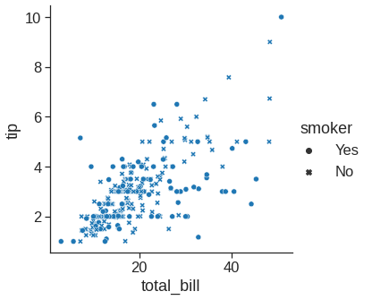
sns.relplot(x="total_bill", y="tip", hue="size", data=tips) #if hue is numeric rather than categorical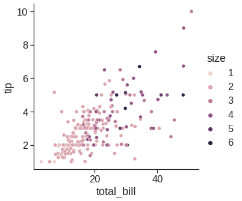
sns.relplot(x="total_bill", y="tip", size="size", sizes=(15, 200), data=tips) #size rather than colors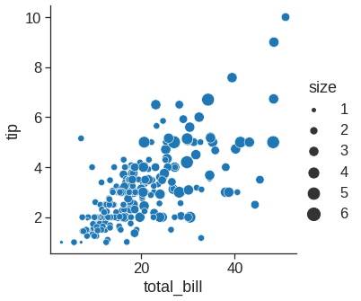
Note that we can plot small multiples by using row and col variable
1.2.2 Lineplot
With some datasets, you may want to understand changes in one variable as a function of time, or a similarly continuous variable. In this situation, a good choice is to draw a line plot to emphasize the continuity.
df = pd.DataFrame(dict(time=np.arange(500),
value=np.random.randn(500).cumsum()))
g = sns.relplot(x="time", y="value", kind="line", data=df)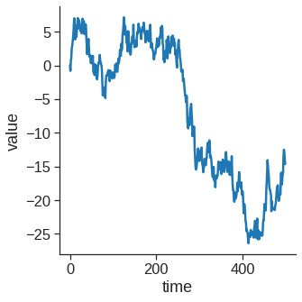
More complex datasets will have multiple measurements for the same value of the x variable. The default behavior in seaborn is to aggregate the multiple measurements at each x value by plotting the mean and the 95% confidence interval around the mean by bootstraping:
1.2.3 Histplot
An early step in any effort to analyze or model data should be to understand how the variables are distributed. Techniques for distribution visualization can provide quick answers to many important questions. What range do the observations cover? What is their central tendency? Are they heavily skewed in one direction? Is there evidence for bimodality? Are there significant outliers? Do the answers to these questions vary across subsets defined by other variables?
1.2.4 Kdeplot
Kernel density estimation (KDE) presents a different solution to the same problem. Rather than using discrete bins, a KDE plot smooths the observations with a Gaussian kernel, producing a continuous density estimate:
<matplotlib.axes._subplots.AxesSubplot at 0x7fdf7c9ea390>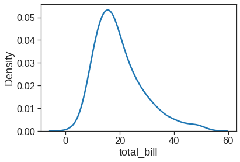
1.2.5 Joinplot
jointplot() augments a bivariate relatonal or distribution plot with the marginal distributions of the two variables. By default, jointplot() represents the bivariate distribution using scatterplot() and the marginal distributions using histplot():
1.2.6 Pairpolt
The pairplot() function offers a similar blend of joint and marginal distributions. Rather than focusing on a single relationship, however, pairplot() uses a “small-multiple” approach to visualize the univariate distribution of all variables in a dataset along with all of their pairwise relationships:
1.2.7 Boxplot
As the size of the dataset grows, categorical scatter plots become limited in the information they can provide about the distribution of values within each category. When this happens, there are several approaches for summarizing the distributional information in ways that facilitate easy comparisons across the category levels.

1.2.8 Barplot
Rather than showing the distribution within each category, you might want to show an estimate of the central tendency of the values. In seaborn, the barplot() function operates on a full dataset and applies a function to obtain the estimate (taking the mean by default). When there are multiple observations in each category, it also uses bootstrapping to compute a confidence interval around the estimate, which is plotted using error bars:
1.2.9 Countplot
1.2.10 Pointplot
This function also encodes the value of the estimate with height on the other axis, but rather than showing a full bar, it plots the point estimate and confidence interval
1.2.11 Regplot/lmplot
In the spirit of Tukey, the regression plots in seaborn are primarily intended to add a visual guide that helps to emphasize patterns in a dataset during exploratory data analyses. The goal of seaborn, however, is to make exploring a dataset through visualization quick and easy, as doing so is just as (if not more) important than exploring a dataset through tables of statistics.
<matplotlib.axes._subplots.AxesSubplot at 0x7fdf77eaee90>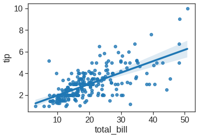
When the y variable is binary, simple linear regression also “works” but provides implausible predictions. The solution in this case is to fit a logistic regression, such that the regression line shows the estimated probability of y = 1 for a given value of x:
1.2.12 Heatmap
Customized your plot https://seaborn.pydata.org/tutorial/axis_grids.html. For more information, see https://seaborn.pydata.org/tutorial.html
1.3 Lab1: Loading Datasets and processing

source: https://stackoverflow.com/questions/2354725/what-exactly-is-llvm
Datasets available on https://www.statlearning.com/resources-second-edition
| year | age | maritl | race | education | region | jobclass | health | health_ins | logwage | wage | |
|---|---|---|---|---|---|---|---|---|---|---|---|
| 0 | 2006 | 18 | 1. Never Married | 1. White | 1. < HS Grad | 2. Middle Atlantic | 1. Industrial | 1. <=Good | 2. No | 4.318063 | 75.043154 |
| 1 | 2004 | 24 | 1. Never Married | 1. White | 4. College Grad | 2. Middle Atlantic | 2. Information | 2. >=Very Good | 2. No | 4.255273 | 70.476020 |
| 2 | 2003 | 45 | 2. Married | 1. White | 3. Some College | 2. Middle Atlantic | 1. Industrial | 1. <=Good | 1. Yes | 4.875061 | 130.982177 |
((3000, 11),
Index(['year', 'age', 'maritl', 'race', 'education', 'region', 'jobclass',
'health', 'health_ins', 'logwage', 'wage'],
dtype='object'))<class 'pandas.core.frame.DataFrame'>
RangeIndex: 3000 entries, 0 to 2999
Data columns (total 11 columns):
# Column Non-Null Count Dtype
--- ------ -------------- -----
0 year 3000 non-null int64
1 age 3000 non-null int64
2 maritl 3000 non-null object
3 race 3000 non-null object
4 education 3000 non-null object
5 region 3000 non-null object
6 jobclass 3000 non-null object
7 health 3000 non-null object
8 health_ins 3000 non-null object
9 logwage 3000 non-null float64
10 wage 3000 non-null float64
dtypes: float64(2), int64(2), object(7)
memory usage: 257.9+ KB(None, year age logwage wage
count 3000.000000 3000.000000 3000.000000 3000.000000
mean 2005.791000 42.414667 4.653905 111.703608
std 2.026167 11.542406 0.351753 41.728595
min 2003.000000 18.000000 3.000000 20.085537
25% 2004.000000 33.750000 4.447158 85.383940
50% 2006.000000 42.000000 4.653213 104.921507
75% 2008.000000 51.000000 4.857332 128.680488
max 2009.000000 80.000000 5.763128 318.342430)groupby_year = Wage.groupby('year')
for year, value in groupby_year['wage']:
print((year, value.mean()))(2003, 106.1982838253092)
(2004, 111.15999687022257)
(2005, 110.03785731274047)
(2006, 114.24257930246814)
(2007, 112.89455609045216)
(2008, 113.55199949510215)
(2009, 115.97177059231909)groupby_year # groupby_year is a powerful object that exposes many operations on the resulting group of dataframes:<pandas.core.groupby.generic.DataFrameGroupBy object at 0x7fdf77a27f90>Seaborn combines simple statistical fits with plotting on Pandas dataframes.
# creating plots
# Scatter plot with polynomial regression line, the regression line is bounded by the data limits. truncate=True.
plt.figure(figsize=(4,6))
sns.scatterplot(x="age", y="wage", data=Wage, alpha=0.1)
sns.regplot(x="age", y="wage", data=Wage, order=4, truncate=True, scatter=False) <matplotlib.axes._subplots.AxesSubplot at 0x7fdf77a47890>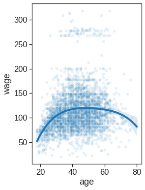
# creating plots
# Scatter plot with polynomial regression line
plt.figure(figsize=(4,6))
sns.scatterplot(x="year", y="wage", data=Wage, alpha=0.1)
sns.regplot(x="year", y="wage", data=Wage, order=1, truncate=True, scatter=False)<matplotlib.axes._subplots.AxesSubplot at 0x7fdf77a05ed0>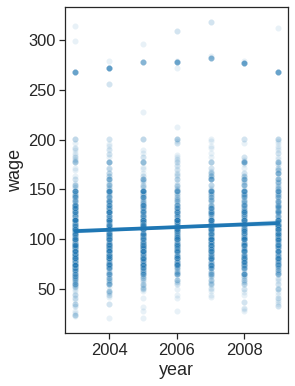
print(Wage.education.unique())
originalL = list(Wage.education.unique())
orderL = [originalL[0], originalL[3], originalL[2], originalL[1], originalL[4]]['1. < HS Grad' '4. College Grad' '3. Some College' '2. HS Grad'
'5. Advanced Degree']plt.figure(figsize=(4,6))
ax = sns.boxplot(x="education", y="wage", data=Wage, order=orderL)
ax.set_xticklabels([t.get_text().split()[0][0] for t in ax.get_xticklabels()])[Text(0, 0, '1'),
Text(0, 0, '2'),
Text(0, 0, '3'),
Text(0, 0, '4'),
Text(0, 0, '5')]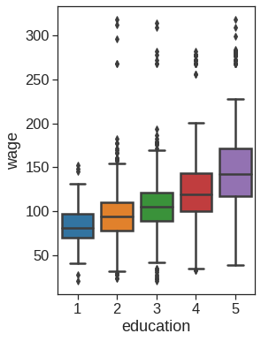
| Year | Lag1 | Lag2 | Lag3 | Lag4 | Lag5 | Volume | Today | Direction | |
|---|---|---|---|---|---|---|---|---|---|
| 0 | 2001 | 0.381 | -0.192 | -2.624 | -1.055 | 5.010 | 1.1913 | 0.959 | Up |
| 1 | 2001 | 0.959 | 0.381 | -0.192 | -2.624 | -1.055 | 1.2965 | 1.032 | Up |
| 2 | 2001 | 1.032 | 0.959 | 0.381 | -0.192 | -2.624 | 1.4112 | -0.623 | Down |
| 3 | 2001 | -0.623 | 1.032 | 0.959 | 0.381 | -0.192 | 1.2760 | 0.614 | Up |
| 4 | 2001 | 0.614 | -0.623 | 1.032 | 0.959 | 0.381 | 1.2057 | 0.213 | Up |
plt.figure(figsize=(4,6))
ax =sns.boxplot(x="Direction", y="Lag1", data=Smarket, order=["Down", "Up"])
ax.set_ylabel("Percentage change in S&P")
ax.set_xlabel("Today's Direction")
plt.title("Yesterday")Text(0.5, 1.0, 'Yesterday')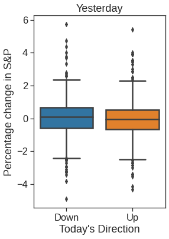
plt.figure(figsize=(4,6))
ax = sns.boxplot(x="Direction", y="Lag2", data=Smarket, order=["Down", "Up"])
ax.set_ylabel("Percentage change in S&P")
ax.set_xlabel("Today's Direction")
plt.title("Two Days Previois")Text(0.5, 1.0, 'Two Days Previois')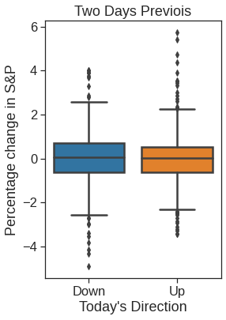
plt.figure(figsize=(4,6))
ax = sns.boxplot(x="Direction", y="Lag3", data=Smarket, order=["Down", "Up"])
ax.set_ylabel("Percentage change in S&P")
ax.set_xlabel("Today's Direction")
plt.title("Three Days Previois")Text(0.5, 1.0, 'Three Days Previois')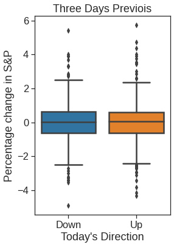
| Lag1 | Lag2 | Lag3 | Lag4 | Lag5 | Volume | Today | Direction | |
|---|---|---|---|---|---|---|---|---|
| Year | ||||||||
| 2001 | 0.381 | -0.192 | -2.624 | -1.055 | 5.010 | 1.1913 | 0.959 | Up |
| 2001 | 0.959 | 0.381 | -0.192 | -2.624 | -1.055 | 1.2965 | 1.032 | Up |
| 2001 | 1.032 | 0.959 | 0.381 | -0.192 | -2.624 | 1.4112 | -0.623 | Down |
| 2001 | -0.623 | 1.032 | 0.959 | 0.381 | -0.192 | 1.2760 | 0.614 | Up |
| 2001 | 0.614 | -0.623 | 1.032 | 0.959 | 0.381 | 1.2057 | 0.213 | Up |
| Lag1 | Lag2 | |
|---|---|---|
| Year | ||
| 2001 | 0.381 | -0.192 |
| 2001 | 0.959 | 0.381 |
| 2001 | 1.032 | 0.959 |
| 2001 | -0.623 | 1.032 |
| 2001 | 0.614 | -0.623 |
| ... | ... | ... |
| 2004 | 0.046 | 0.342 |
| 2004 | -0.431 | 0.046 |
| 2004 | 0.715 | -0.431 |
| 2004 | -0.007 | 0.715 |
| 2004 | 0.008 | -0.007 |
998 rows × 2 columns
<matplotlib.axes._subplots.AxesSubplot at 0x7fdf78024bd0>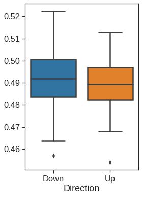
| Unnamed: 0 | 1 | 2 | 3 | 4 | 5 | 6 | 7 | 8 | 9 | ... | 6821 | 6822 | 6823 | 6824 | 6825 | 6826 | 6827 | 6828 | 6829 | 6830 | |
|---|---|---|---|---|---|---|---|---|---|---|---|---|---|---|---|---|---|---|---|---|---|
| 0 | V1 | 0.300000 | 1.180000 | 0.550000 | 1.140000 | -0.265000 | -7.000000e-02 | 0.350000 | -0.315000 | -0.450000 | ... | -0.990020 | 0.000000 | 0.030000 | -0.175000 | 0.629981 | -0.030000 | 0.000000 | 0.280000 | -0.340000 | -1.930000 |
| 1 | V2 | 0.679961 | 1.289961 | 0.169961 | 0.379961 | 0.464961 | 5.799610e-01 | 0.699961 | 0.724961 | -0.040039 | ... | -0.270058 | -0.300039 | -0.250039 | -0.535039 | 0.109941 | -0.860039 | -1.250049 | -0.770039 | -0.390039 | -2.000039 |
| 2 | V3 | 0.940000 | -0.040000 | -0.170000 | -0.040000 | -0.605000 | 0.000000e+00 | 0.090000 | 0.645000 | 0.430000 | ... | 0.319981 | 0.120000 | -0.740000 | -0.595000 | -0.270020 | -0.150000 | 0.000000 | -0.120000 | -0.410000 | 0.000000 |
| 3 | V4 | 0.280000 | -0.310000 | 0.680000 | -0.810000 | 0.625000 | -1.387779e-17 | 0.170000 | 0.245000 | 0.020000 | ... | -1.240020 | -0.110000 | -0.160000 | 0.095000 | -0.350019 | -0.300000 | -1.150010 | 1.090000 | -0.260000 | -1.100000 |
| 4 | V5 | 0.485000 | -0.465000 | 0.395000 | 0.905000 | 0.200000 | -5.000000e-03 | 0.085000 | 0.110000 | 0.235000 | ... | 0.554980 | -0.775000 | -0.515000 | -0.320000 | 0.634980 | 0.605000 | 0.000000 | 0.745000 | 0.425000 | 0.145000 |
5 rows × 6831 columns
NCI60 = pd.read_csv('/content/drive/MyDrive/Lab/Data/NCI60_data.csv').drop('Unnamed: 0', axis=1)
NCI60.columns = np.arange(NCI60.columns.size)
NCI60.head()| 0 | 1 | 2 | 3 | 4 | 5 | 6 | 7 | 8 | 9 | ... | 6820 | 6821 | 6822 | 6823 | 6824 | 6825 | 6826 | 6827 | 6828 | 6829 | |
|---|---|---|---|---|---|---|---|---|---|---|---|---|---|---|---|---|---|---|---|---|---|
| 0 | 0.300000 | 1.180000 | 0.550000 | 1.140000 | -0.265000 | -7.000000e-02 | 0.350000 | -0.315000 | -0.450000 | -0.654980 | ... | -0.990020 | 0.000000 | 0.030000 | -0.175000 | 0.629981 | -0.030000 | 0.000000 | 0.280000 | -0.340000 | -1.930000 |
| 1 | 0.679961 | 1.289961 | 0.169961 | 0.379961 | 0.464961 | 5.799610e-01 | 0.699961 | 0.724961 | -0.040039 | -0.285019 | ... | -0.270058 | -0.300039 | -0.250039 | -0.535039 | 0.109941 | -0.860039 | -1.250049 | -0.770039 | -0.390039 | -2.000039 |
| 2 | 0.940000 | -0.040000 | -0.170000 | -0.040000 | -0.605000 | 0.000000e+00 | 0.090000 | 0.645000 | 0.430000 | 0.475019 | ... | 0.319981 | 0.120000 | -0.740000 | -0.595000 | -0.270020 | -0.150000 | 0.000000 | -0.120000 | -0.410000 | 0.000000 |
| 3 | 0.280000 | -0.310000 | 0.680000 | -0.810000 | 0.625000 | -1.387779e-17 | 0.170000 | 0.245000 | 0.020000 | 0.095019 | ... | -1.240020 | -0.110000 | -0.160000 | 0.095000 | -0.350019 | -0.300000 | -1.150010 | 1.090000 | -0.260000 | -1.100000 |
| 4 | 0.485000 | -0.465000 | 0.395000 | 0.905000 | 0.200000 | -5.000000e-03 | 0.085000 | 0.110000 | 0.235000 | 1.490019 | ... | 0.554980 | -0.775000 | -0.515000 | -0.320000 | 0.634980 | 0.605000 | 0.000000 | 0.745000 | 0.425000 | 0.145000 |
5 rows × 6830 columns
y = pd.read_csv('/content/drive/MyDrive/Lab/Data/NCI60_labs.csv', usecols=[1], skiprows=1, names=['type'])
y.shape(64, 1)RENAL 9
NSCLC 9
MELANOMA 8
BREAST 7
COLON 7
OVARIAN 6
LEUKEMIA 6
CNS 5
PROSTATE 2
UNKNOWN 1
K562B-repro 1
K562A-repro 1
MCF7A-repro 1
MCF7D-repro 1
Name: type, dtype: int64fig, (ax1, ax2) = plt.subplots(1,2, figsize=(15,6))
# Left plot
sns.scatterplot(x =0, y=-NCI60_plot[1], data=NCI60_plot, hue=y.type, alpha=0.5, s=50, ax=ax1, legend=False)
ax1.set_xlabel('Z1')
ax1.set_ylabel('Z2')
# Right plot
sns.scatterplot(x = 0, y= 2, data=NCI60_plot, hue=y.type, alpha=0.5, s=50, ax=ax2)
ax2.legend(loc='center left', bbox_to_anchor=(1, 0.5), ncol=2)
ax2.set_xlabel('Z1')
ax2.set_ylabel('Z3')Text(0, 0.5, 'Z3')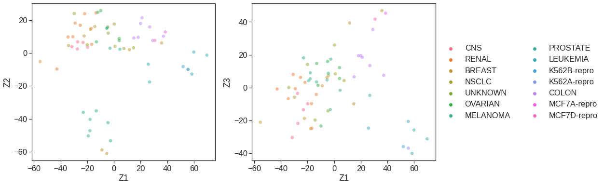